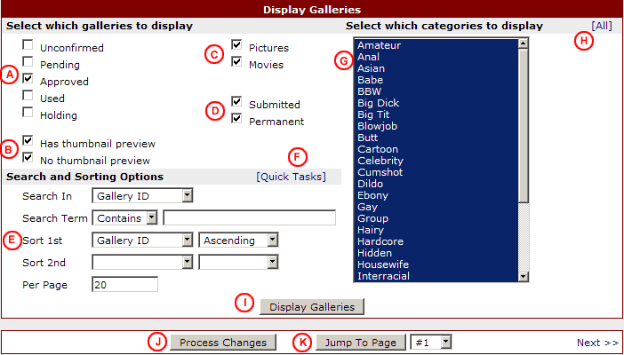
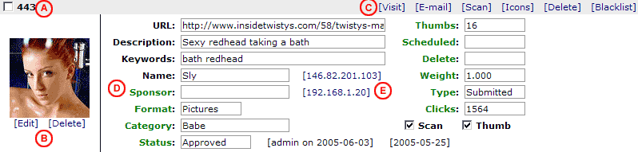

Introduction
The gallery database is the heart of AutoGallery SQL, and it's main purpose is to accept, process, and display them. The software supports different types of galleries
and allows you to add galleries to the database in several different ways. This document will cover various aspects of the gallery database, from adding galleries to
managing and deleting them.
Permanent vs Submitted
AutoGallery SQL supports two different types of galleries in your database, Submitted and Permanent. For the most part all of the galleries will have the same options
and settings no matter what type they are, however there are some differences between the two types.
Submitted Galleries
A submitted gallery is generally considered one that was provided by an outside webmaster who added the gallery through AutoGallery SQL's submit.cgi gallery submission form.
Although it is possible to add submitted galleries through the control panel, the majority of them will usually come from outside webmasters who have submitted them. When
a submitted gallery is scanned it is checked against the blacklist, banned HTML list, and checked if it has a reciprocal link if you are requiring one.
When a submitted gallery is no longer being used on one of your TGP pages it will become eligible for deletion. The software will place the gallery in a holding queue, and once
the hold period has elapsed the gallery will be deleted from the database for good. This is different from permanent galleries, which will be continuously rotated back into the
queue of approved galleries instead of deleted.
To display submitted galleries on your TGP pages you will need to use the GALLERIES directive and make sure that the TYPE option is set to Submitted. The
TGP Page Templates section of the software manual has additional information on how the template system works.
Permanent Galleries
Permanent galleries can only be added to the database through the software's control panel. Generally permanent galleries will be those that you have created and own yourself
or galleries from your sponsors. It is recommended that only galleries from trusted sources be used as permanent galleries because the gallery scanner will not check permanent
galleries against the blacklist, the banned HTML list, or for a reciprocal link.
When a permanent gallery is no longer being used on one of your TGP pages it will become eligible for rotation back into the pool of approved galleries. The software will place
the gallery in a holding queue, and once the hold period has elapsed the gallery will be moved back to the pool of approved galleries so it can be used again.
This is different from submitted galleries, which will be deleted from the database once their holding period has elapsed.
To display submitted galleries on your TGP pages you will need to use the GALLERIES directive and make sure that the TYPE option is set to Permanent. The
TGP Page Templates section of the software manual has additional information on how the template system works.
To recap, the main differences between submitted and permanent galleries are how they can be added to the database, how the gallery scanner processes them, how long
they stay in the database, and how they can be displayed on your TGP pages.
Adding Galleries
There are three ways to add galleries to the database: through the submit.cgi script, through the control panel's manual submission form, and by
importing galleries from text files. This document will cover the first two. If you need information on importing galleries, see the
Importing Galleries section of this manual.
submit.cgi
The submit.cgi script is where all webmasters will submit their galleries. It can be used by anyone, including those who have a partner account
at your TGP. Submitting galleries through the submit.cgi script is very straightforward. All you need to do is fill in each of the form fields and
then press the Submit Gallery button. Each of the form fields is described below.
Username - if the submitter has a partner account, they should enter their username
Password - if the submitter has a partner account, they should enter their password
E-mail - this is the submitter's e-mail address where they can be reached
Name - this is the submitter's name or nickname, and is optional unless you specify otherwise
Gallery URL - this is the full URL to the gallery they are submitting
Description - this is the description of the gallery they are submitting
Category - this is the category that best describes the gallery content
Number of Thumbs - this is the number of thumbnails on the gallery
Preview Thumb - this allows the submitter to upload a preview thumbnail
Submit Code - the submitter will need to copy the numbers from the image into this text box
Once the submit button has been pressed, a number of things will happen. First all of the form input fields will be checked to make sure that
they are properly formatted. The gallery will be scanned to make sure it is working and meets all of your rules, and finally it will be placed
in the database. The outcome of the submission will depend on how you have AutoGallery SQL configured.
Thumbnail Cropping
If you have the thumbnail cropping feature enabled, the submitter will now be able to crop a thumbnail from the images on their
gallery or the image that they uploaded. Once they have cropped their thumbnail, AutoGallery SQL will do one of the other items listed below,
depending on how you have the software configured.
Confirmation E-mail
If you have the confirmation e-mail option enabled, an e-mail will be sent to the submitter. They will need to visit a URL contained in that
e-mail and enter the confirmation ID they were provided in order to confirm their submission. Once the gallery is confirmed, AutoGallery SQL will do
one of the other items listed below, depending on how you have the software configured.
Auto-Approve
If you have the auto-approve feature enabled or the gallery was submitted by a partner account that has auto-approve enabled, the gallery will
automatically be approved and placed in the database with Approved status. The gallery will be immediately eligible for display on your TGP page
and could be selected for display the next time you run the rebuild function.
Pending
If you do not have the auto-approve feature enabled, the gallery will be placed in the database and it's status will be set to pending. All pending
galleries must be a approved through the control panel before they can be displayed. You will need to login to the control panel to approve pending
galleries on a regular basis.
Control Panel
Submitting galleries through the control panel is very similar to the submit form, however you will have some different options. To submit a gallery
through the control panel, locate and click on the Submit a Gallery link in the Manage Galleries section of the control panel menu. The additional
fields are described below:
Keywords - a list of words that describe this gallery
Weight - this is the weight that you want assigned to the gallery
Type - select if you want this gallery to be a submitted or permanent gallery
Format - select the format of the gallery, either Pictures or Movies
Status - this is the status that you want assigned to the gallery
Scheduled Date - this is when the gallery will first be eligible for display (this field can be left blank)
Delete Date - this is the date when the gallery will be deleted from the database (this field can be left blank)
Once you have filled in the form fields how you want them, press the Add Gallery button. The manual submission form gives you greater control
over what is submitted. Galleries submitted here are not checked against the blacklist, so you can pretty much submit anything you want.
Managing Galleries
To manage the galleries in your database, locate and click on the Display Galleries link in the Manage Galleries section of the control panel menu.
AutoGallery SQL will load a page where you can view, search, and manage all of your galleries. At the top of the page there will be a box which you can use to
control what galleries will be displayed.

A description of each of the marked items follows.
- Display galleries which have the status that is checked. You can check as many of these as you like.
Unconfirmed - these are galleries that have been submitted but were never confirmed by the submitter
Pending - these are galleries that have been submitted but not yet approved
Approved - these are the galleries that have been approved
Used - these are the galleries that are currently in use on one of your pages
Holding - these are galleries that are no longer being used and are in the holding queue
Disabled - these are galleries that have been temporarily disabled and are not eligible for display
- Display galleries that have a thumbnail preview or not. You can check either or both of these.
Has thumbnail preview - galleries with a thumbnail preview will be shown if this is checked
No thumbnail preview - galleries that do not have a thumbnail preview will be shown if this is checked
- Display galleries of the format that is checked. You can check either or both of these.
Pictures - check this to display picture galleries
Pending - check this to display movie galleries
- Display galleries of the type that is checked. You can check either or both of these.
Submitted - check this to display submitted galleries
Permanent - check this to display permanent galleries
- These are your search options.
Search In - this determines what database field is searched
Search Term - this determines what is searched for. Leave this blank to display all galleries or use [EMPTY] to search for empty fields
Contains - This will search for the search term anywhere in the field you are searching
Matches - This will search for an exact match on the term you enter
Sort 1st - this determines how the galleries are sorted when they are displayed
Sort 2nd - this determines how the galleries are sub-sorted when they are displayed
Per Page - this determines how many galleries are displayed per page
- Click this link to open the quick tasks window. This is discussed further on in this document.
- These are your category options. You can select one or more categories from the list to restrict which category's galleries are shown.
- Click this link to quickly select all categories.
- Any time you change your search options, press this button to execute a new search
- Any time you make changes to any of the gallery information, press this button to update the database
- Select the page you want to go to and press this button to quickly access pages of search results
Once you have selected the options to determine what galleries you want do display, press the Display Galleries button. AutoGallery SQL will
search the database using your criteria, and display a list of the galleries it finds. Each gallery will be displayed in it's own section,
as you see below.

A description of each of the marked items follows.
- This is the ID number that has been assigned to the gallery along with a checkbox that you can use to delete multiple galleries at once
- This is where you can view and manage the gallery's preview thumbnail. If the gallery does not have a preview
thumbnail it will say [No Thumb]. You can click on the [No Thumb] link to create or upload one. To delete the
thumbnail click on the [Delete] link. To create or upload a new thumbnail, click on the [Edit] link.
- These links can be clicked to perform different actions
If the gallery was submitted by a partner, the username will appear in orange text here
[Visit] - Click this link to visit the gallery. It will open in a new window.
[E-mail] - Click on this link to use your normal e-mail client to send an e-mail to this submitter.
[Scan] - Click this link to have AutoGallery SQL scan the gallery. A pop-up window will appear with the scan results.
[Icons] - Click this link to assign one or more icons to a gallery. Use the All button to assign the same icons to all of the galleries on the page.
[Delete] - Click on this link to delete the gallery completely. A pop-up window will appear to confirm the deletion.
[Blacklist] - Click on this link to blacklist one or more items from the gallery. A pop-up window will appear where you can
select what you want blacklisted.
- These fields allow you to edit the gallery data
URL - The full gallery URL. This field will be colored green if the gallery scanner found a reciprocal link on the gallery
Description - A text description of the gallery
Keywords - A list of words that describe the gallery
Name - The name of the person who added the gallery
Sponsor - The name of the sponsor that owns the gallery
Format - The gallery format, either Pictures or Movies
Display - The display date that has been assigned to the gallery (YYYY-MM-DD format)
Category - The category that the gallery is in
Status - The current status of the gallery
Thumbs - The number of thumbnails on the gallery
Scheduled - The date that the gallery will become eligible for display (YYYY-MM-DD format)
Delete - The date that the gallery will be deleted from the database (YYYY-MM-DD format)
Weight - The weight assigned to the gallery
Type - The gallery type, either Submitted or Permanent
Clicks - The number of clicks the gallery has received (must be using the go.php script)
Scan - Check this box if you want the gallery scanner to scan the gallery when it runs
Thumb - Check this box if you want the gallery scanner to be able to automatically create a thumbnail for this gallery when it runs
Notes - This field will show why a Disabled gallery has been disabled when done by the gallery scanner or partner request
- The top IP address is the IP address of the gallery. If there is no top IP address, it means the gallery has not yet been scanned.
The bottom IP address is the IP address of the gallery submitter
Manually Assigning Display Dates and Setting Used Status
In general it is not recommended that you manually set the gallery status to Used or assign the Display setting, however in some situations you may want to do this.
Note that the Display setting can only be configured for galleries with Used status. If you set the Display setting for a gallery with Approved status, it will be
overwritten when the gallery is selected for display.
One of the main reasons you may need to manually set a gallery status to Used and configure it's Display setting is if you need to force galleries to appear in a
specific GALLERIES section of your page. For example, if you are using the AGE option of the GALLERIES directive and have it set to 2, that section will only
display used galleries from 2 days ago. If you do not have any used galleries that were selected for display 2 days ago, you can force some galleries to have
those settings. So, if today was 2005-05-15 (May 15th, 2005) you could set some of your galleries Status to Used and set their Display setting to 2005-05-13 to
have them appear in that GALLERIES section.
Using the Gallery Weight Value
By default the weight setting has no affect on your galleries, it only comes into play when you have set the WEIGHT option of the GALLERIES directive or are using
the Weight sorting string in the ORDER and/or REORDER options of the GALLERIES directive (these are all configured through your TGP page template). The weight value
can be any number up to approximately 2 billion (depending on your server) and it is up to you to decide if lower numbers are better or higher numbers are better.
When you use Weight in the ORDER or REORDER options, you can control which is better by using the DESC attribute or not. If you use Weight DESC, then larger weight
numbers will appear at the top of the list. If you just use Weight by itself, smaller weight numbers will appear at the top of the list.
Approving New Galleries
Galleries can also be approved using the Framed Gallery Reviewer
To approve new galleries you will first want to bring up all of the Pending galleries in your database. From the Display Galleries box at
the top of the page make sure that the Pending box is checked. You can then decide if you want to display galleries with thumbs or without,
and which categories you want to see. Once you have the form filled in for the galleries you want to see, press the Display Galleries button.
AutoGallery SQL will load your pending galleries for you to view. You can then go through and examine each gallery to see if you want to keep it for
your TGP.
For galleries that you want to keep, edit the Status field and select the Approved option. For galleries that you want to reject, select the
Rejected option. For rejected galleries you can select to send an e-mail to the submitter with information on why it was rejected. That can
be selcted from the Reject field (this field only appears for Pending or Unconfirmed galleries). Once you have set the status for all of the
galleries that you want to process, press the Process Changes button.
For the galleries that you have approved, their status will change to Approved and this will put them in the pool of available galleries which the
software can select from when building your pages. Depending on how your templates are configured, the gallery could be displayed the next time
the pages are rebuilt. For more information on how the gallery selection process works, see the
Page Building
Overview section of the software manual.
Updating
All of the text input fields you see on the Display Galleries page can be edited at any time to make changes to the gallery data that is stored in
the database. After you have made changes to one or more galleries, you will need to press the Process Changes button located at the top of the
page. If you do not press the Process Changes button, the updates you have made will not take effect.
Clicking on any of the green colored links will apply that value to every gallery on the current page. For example, if you want all of the galleries to
be in the same category, click on the green Category link for a gallery that has the category you want to use. Each of the category fields on the page
will be changed to that category, and you can then press the Process Changes button to save the changes to the database.
Deleting
To delete a gallery all you need to do is click on the [Delete] link for that gallery. A pop-up window will appear confirming the deletion. If you
are deleting a Used gallery, you will also want to run the rebuild function so that the gallery is removed from your TGP pages.
To delete multiple galleries at once, put a check in the checkbox next to the gallery's ID number. Once you have checked all the galleries that you
want to delete, press the Delete Selected button at the bottom of the page.
Viewing Source and HTTP Headers
It is often times useful to see the source code of the page and the HTTP headers from the server as AutoGallery SQL sees them. You can
use this feature to determine if your server is resolving the gallery hostname to the correct IP address and to find out if the gallery
uses the same HTML code when accessed from your server as it does when accessed from your local internet connection. To view the source
and HTTP headers click on the [Scan] link. The gallery will be scanned and there will be a pop-up window with a link labeled
'Display HTML Source and HTTP Headers' that you can click on. Click on this link, which will open a new pop-up window and display
the IP address of the gallery, the HTTP headers, and the source code of the gallery page.
Quick Tasks
When you click on the [Quick Tasks] link a window will pop up and display several functions that you can perform on the submitted
galleries. Each of the available tasks will be described below.
Search and Replace
If you need to quickly search for and replace an item in your entire database of submitted galleries, you can use this function.
For example, if you have decided that you no longer want to allow the phrase 'young girl' in the gallery description you can use
this function to replace all occurances of that phrase with 'legal teen'. To do this you would enter 'young girl' in the Find
box and select Description from the drop down selection field. In the Replace With box enter 'legal teen'. You can now press the
replace button and AutoGallery SQL will automatically go through the entire submitted gallery database replacing each occurance
of 'young girl' with 'legal teen'. If you want to search for an empty value, use the special string [EMPTY] in the Find field.
You do need to be somewhat cautious when using this feature because it will locate the text you enter in the Find box anywhere within
the field it is searching. For example, if you wanted to replace the word 'tit' in the gallery description with 'boob' you could run
into some problems. If a gallery description has the word 'title' it will end up changing that to 'booble'. To prevent this from
happening you can use a space before or after the word to affect how the searching is done. If you enter ' tit ' it will look for
the word 'tit' with a space before and after it.
Search and Delete
This works very similarly to the search and replace feature, but the gallery will be deleted from the database if the text is found. For
example, if you know that a cheater is using the IP address 192.168.15.45 to submit galleries and you want to make sure there are no galleries
in your database with that IP you can use the search and delete feature. Simply enter 192.168.15.45 in the Find box and select Submit IP from
the drop down selection field. Press the Delete button and all galleries that were submitted from the IP address 192.168.15.45 will be removed
from the database.
You do need to be somewhat cautious when using this feature because it will locate the text you enter in the Find box anywhere within
the field it is searching. For example, if you wanted to delete all galleries with the word 'tit' in the gallery description, you could run
into some problems. If a gallery description has the word 'title' it will end up deleting that gallery as well. To prevent this from
happening you can use a space before or after the word to affect how the searching is done. If you enter ' tit ' it will look for
the word 'tit' with a space before and after it.
Search and Set
To do a search and set, enter the text you would like to search for and select which field should be searched. You will then need to enter the field that
should be updated and what it should be set to. For example, if you wanted to locate all galleries with fetish in the URL and set the Category value
to Fetish, you would enter fetish in the Find field, select Gallery URL for the in field, select Category for the Set field, and enter
Fetish in the to field. Note that this does not do replacements, but instead sets the field to the value you enter. If you want to search for an empty
value, use the special string [EMPTY] in the Find field.
Other Functions
Reset the click count for all submitted galleries back to zero
Click on this link to reset the click counts for all submitted galleries back to zero. This will not affect permanent galleries.
Reset the click count for all permanent galleries back to zero
Click on this link to reset the click counts for all permanent galleries back to zero. This will not affect submitted galleries.
Remove unconfirmed galleries that are more than 48 hours old
This function is pretty much self explanatory. When you click this link all unconfirmed galleries that are more than 48 hours old will be
deleted from the database.
Display duplicate galleries
Click this link to check if there are any duplicate galleries in the database. This will also give you the option to remove the duplicates
if any are found.
Display thumbnail management interface
This will display an interface where you will be able to bulk-delete thumbnails and also run a thumbnail cleanup routine.
Thumbnail Management Interface
This interface, accessed from Quick Tasks, will allow you to bulk-delete thumbnails from your database. In some situations you may want to delete
the preview thumbnails for a specific category or sponsor, and this function will allow you to do that. In the Delete Thumbnails section of this
interface you can select various options to control which galleries have their thumbnails deleted. For example, to delete thumbnails for all permanent
galleries with disabled status, you would put a check in the box next to Permanent and in the box next to Disabled. You would not need to fill in
anything in the search box, just press the Delete Matching Thumbnails button.
To remove all of the thumbnails for galleries in a specific category, you can select the gallery statuses and types that you want, select Category from
the first drop down selection list, Equals from the second drop down selection list, and then enter the category name in the text input field.
The thumbnail cleanup function will simply go through the database and look for galleries that have a flag set indicating that they have a thumbnail, but
somehow their thumbnail file has been deleted. This could have been the result of someone accidentally deleting some of the files from your thumbnail
directory, for example. This function will update that flag in the database so there are no galleries that point to broken thumbnails. Note that this
will only work for thumbnails that are stored on your server; if the thumbnail is on a remote server it cannot check to see if the thumbnail is still there.